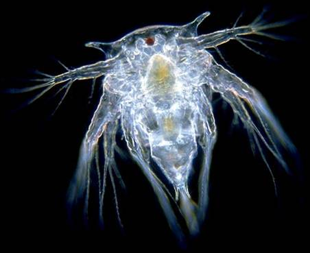
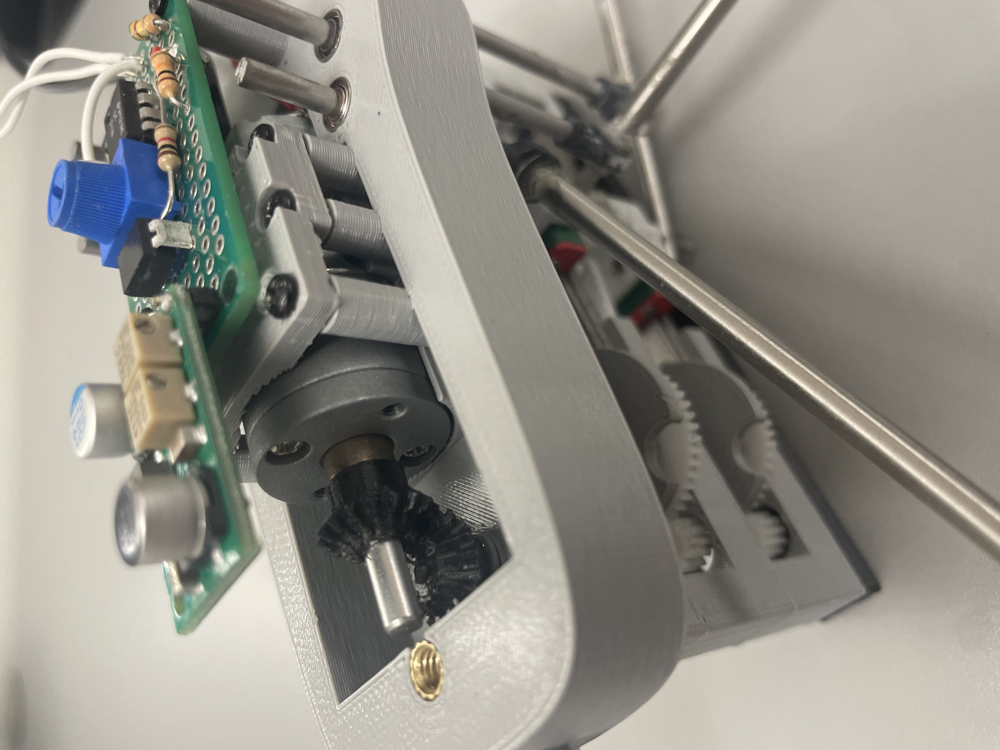
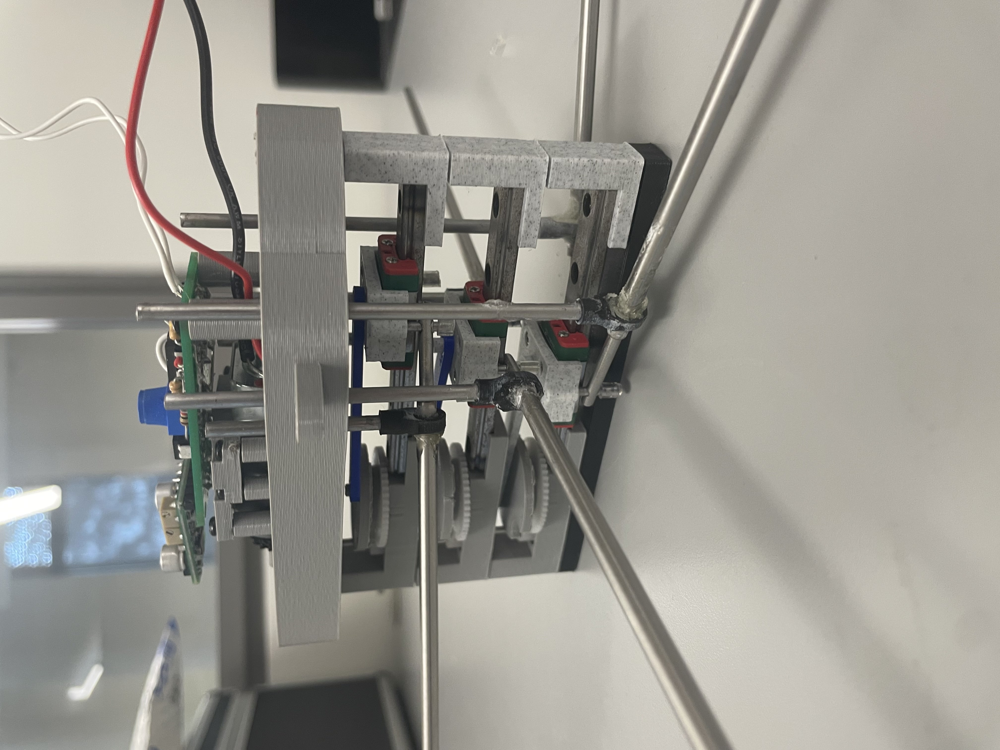
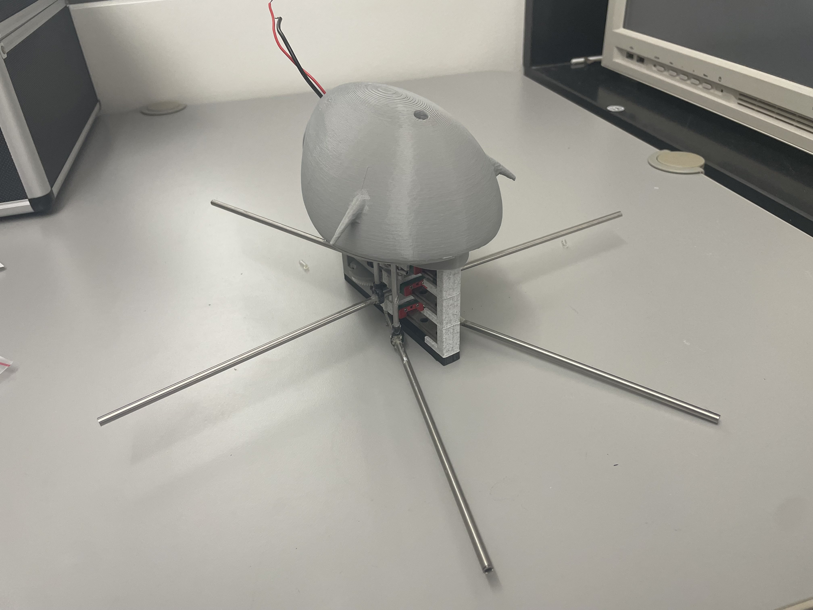

Biomimetic Robotics
October 2024 - January 2026
This long-term project focused on translating the propulsion strategies of
a barnacle nauplius into a controllable mechanical system. The goal was to replicate the organism's
swimming behavior and operating environment closely enough to study its motion in a physical model,
while also exploring how these mechanisms could be applied to systems operating in highly viscous environments.
I worked alongside my good friend and colleague Nathan Brewer under Professor Carr Everbach on this project,
though there were many other student researchers who both motivated our work and continue developing the robot
even after our involvement.
Why Biomimetic Motion?
The barnacle nauplius possesses a distinct swimming stroke that allows
it to move efficiently through highly viscous environments, operating near
the Stokes flow regime where conventional propulsion systems break down. This makes the
organism an interesting system of study from both a biological and engineering perspective.
In collaboration with Swarthmore College and the University of Washington's School of Oceanography,
this project aimed at developing a physical model capable of reproducing the organism's swimming dynamics,
allowing a controlled study of its motion.
Beyond biological interest, the ability to efficiently traverse highly viscous environments has potential
applications in extreme settings such as the subsurface oceans on icy moons like Europa, where similar
fluid conditions may be encountered.

Overview
The model below shows the core mechanical system responsible
for generating the swimming motion. A single motor input is transmitted
through a gear train and linkage system to produce coordinated, periodic motion
across the three pairs of limbs.
A central challenge in the design was accurately replicating both the sweeping angle
of each limb and the phase relationship between limb pairs.
This required careful placement of pivot
positions to generate the desired stroke profile, along with custom gear geometries to produce the correct
timing between limbs.
The mechanism was developed to approximate the idealized motion profile as closely
as possible while minimizing overall system height to maintain consistency with the biological
spacing of the organism's appendages.
This model highlights the primary transmission and linkage behavior that drives the robot's motion.
Model of the core transmission and linkage system.
Functioning Mechanism
The video shows the first successful demonstration of the clockwork mechanism before oars were added, confirming the plausibility of the design. The motor's continuous rotation is translated into coordinated periodic strokes across the limb pairs.
Correct timing and phase relationships are critical to reproducing the organism's characteristic swimming pattern, so this was a major milestone in the development of the system.


Close-ups of the gear train and linkage system, depicting how motion is distributed through the mechanism.
Mechanism To System
Integrating the mechanism into a complete system introduced additional design constraints. The electronics for the control system needed to be enclosed within a waterproof housing that also matched the geometry of the nauplius carapace, ensuring that fluid interactions during testing remained representative of the biological system.
The final build, shown here, incorporates the core mechanism and a sealed, biologically informed enclosure that houses the control electronics. At this stage, the system was ready for testing in a viscous fluid environment.

Light-activated Behavior
The system incorporates a light-activated control mechanism, allowing the robot to be activated remotely when submerged in a viscous fluid environment.
As direct interaction is limited in this setting, light serves as a non-invasive input to trigger the motor. The video shows the robot activating when light (from a phone flashlight) is applied to the sensor and quickly deactivating once the source is removed.